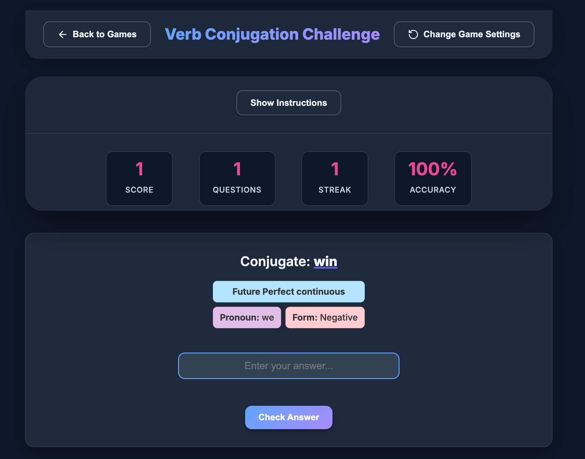
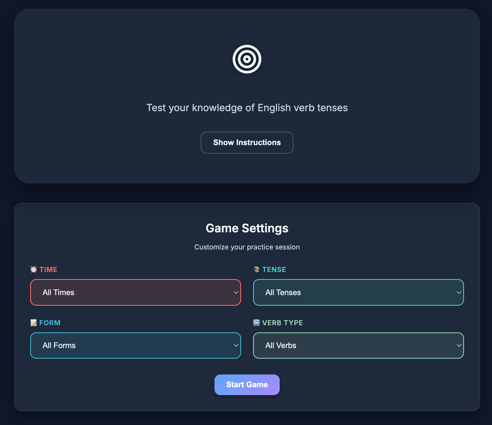

Random Verb Conjugation Game
Randomized verb conjugation practice with dice mechanics for engaging grammar learning
The Problem
ESOL students struggle with verb conjugation across different tenses, especially irregular verbs. Traditional practice methods are predictable and monotonous, leading to disengagement. Students need varied, gamified practice that covers multiple tenses and irregular verb forms with immediate feedback.
Specific Pain Points
- Monotonous practice: Predictable drills don't keep students engaged
- Irregular verb memorization: Students struggle to remember irregular verb forms across tenses
- Limited variety: Static practice sets don't challenge students with varied combinations
- No gamification: Practice feels like work rather than an engaging activity
- Delayed feedback: Students don't know immediately if their conjugations are correct
The Solution
A randomized verb conjugation game that uses dice mechanics to create engaging, unpredictable practice sessions. Students roll dice to determine which verb and tense to conjugate, creating variety and maintaining engagement. The game covers present, past, and future forms with special focus on irregular verbs.
Key Features
🎲 Dice Mechanics
Randomized verb and tense selection using dice rolls for unpredictable practice
📚 Multiple Tenses
Covers present, past, and future forms across regular and irregular verbs
💡 Immediate Feedback
Instant validation of conjugations with clear correct/incorrect indicators
🔄 Irregular Verb Focus
Special emphasis on irregular verb forms that are hardest for learners
🎮 Gamified Learning
Engaging game-like format reduces anxiety and increases practice time
📱 Accessible Design
Works on any device - phone, tablet, or desktop for practice anywhere
Screenshots & Walkthrough

Main game interface with dice mechanics for randomized practice

Immediate feedback showing correct verb conjugations
Technical Implementation
Architecture Decisions
Built as a lightweight React application focusing on randomization logic and immediate feedback. The dice mechanics use JavaScript random number generation to select verbs and tenses, creating unpredictable practice sessions. All validation happens client-side for instant feedback.
Core Features
- Randomized verb selection from comprehensive verb database
- Dice-based tense selection (present, past, future)
- Client-side conjugation validation with immediate feedback
- Irregular verb handling with special rules database
- Responsive design optimized for mobile learning
Interesting Challenges
Challenge: Irregular Verb Patterns
English has many irregular verbs with unique conjugation patterns that don't follow standard rules. Building a validation system that handles all irregular forms correctly.
Solution: Created a comprehensive irregular verb database with all conjugation forms. The validation checks against these specific patterns before falling back to regular conjugation rules.
Challenge: Maintaining Engagement Through Randomization
True randomization can sometimes create frustrating patterns (e.g., getting the same verb multiple times).
Solution: Implemented weighted randomization that avoids recent repeats while maintaining unpredictability. Added visual dice animations to make randomization feel more game-like.
Results & Impact
Increased engagement through gamified dice mechanics keeps students practicing longer. Randomized practice prevents memorization of question order and ensures true understanding. Immediate feedback accelerates learning by correcting mistakes in real-time. Focus on irregular verbs addresses one of the most challenging aspects of English verb conjugation.
Lessons Learned
Randomization Increases Engagement
The dice mechanics make practice feel like a game rather than a drill. Students stay engaged longer when they don't know what's coming next.
Immediate Feedback Is Essential
Students need instant confirmation to reinforce correct patterns and correct mistakes immediately. Delayed feedback significantly reduces learning effectiveness.
Irregular Verbs Need Special Attention
Focusing on irregular verb patterns addresses real student struggles. These forms can't be learned through rules alone and require repeated exposure.